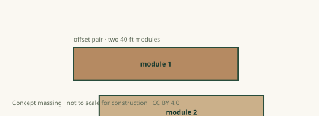

Permanent home · Two containers · wide pair · 40-ft single-container concept
Cabin B · Birch
A ridge-top home that looks into a sunlit birch glade rather than at the water.

Share this home: homes/Birch-2-wide/ · orientation · main view · siting

- Use
- Permanent home
- Approximate size
- ~50 m² clear floor area · ~66 m² footprint
- Principal facade
- south · ~138°
- Placed
- 220 m east, 50 m south of the fictional map origin
- Shoreline
- ~148 m
- Wetland
- ~127 m
Orientation #
The home turns its porch south-east toward the birch glade and the ridge, away from the main lake and away from its neighbours.
Main view #
A sunlit birch glade and a low rock shoulder, with the forest floor visible beneath the trunks. Bearing ~157°, ~19 m to birch glade. partly wooded, with openings that reveal the water or sky.
Through white birch, maple and scattered pine.
Nearby homes #
Cabin E is about 57 m south-east and may be glimpsed through birch in winter; the lodge roof is about 85 m east. Cabin A is about 104 m west behind the ridge. In the view cone: Cabin D at ~101 m; Cabin E at ~57 m; Common lodge at ~85 m.
Path and entry #
The ridge path comes from the south-west and turns to the north entry, keeping the birch-glade view clear.
Winter #
Birch and maple lose their leaves, opening the glade and the lake glimpse. The pines behind the home still screen the ridge track.
Siting #
All illustrative checks pass. These are project assumptions, not legal setbacks or a permit.
- 148.1 m from the shoreline (setback 30 m)
- 126.9 m from the wetland (buffer 30 m)
- Inside the parcel
- 16.1 m from North outcrop (buffer 8 m)
- 59.8 m from a drainage channel (buffer 10 m)
- Natural ground slope 18.3% (limit 22%)
- Building bench cut/fill 0.64 m (limit 1.6 m)
- Crane reach 20 m (limit 24 m)
- Ramp foot 15.7 m from an emergency or access lane (limit 50 m)
- Entry 3.3 m from a walking path (limit 18 m)
- Ramp foot 11.2 m from a walking path (limit 18 m)
Design note #
A two-bedroom variant could use two modules on this wider bench. The current one-module concept is shown as a placeholder for the resident's own brief.
Drawings and next steps #
Base Cabin A drawings · Look inside Cabin B · Show Cabin B on the hamlet map · Design Lab
This page is a brief, not a construction drawing. No photograph, stock image or proprietary design is reproduced.